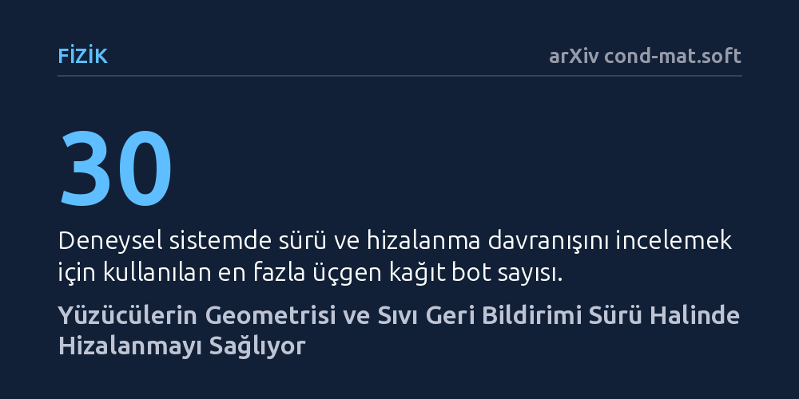

FIZIK · arXiv cond-mat.soft · 2026-10-10
Araştırmacılar, sıvı içindeki aktif yüzücülerin sürü oluştururken ortamla kurdukları etkileşimin ve cisim geometrisinin hizalanmaya etkisini inceledi. Kısmen kafur kaplı otuza kadar üçgen botla yapılan deneylerde, yüzücü şekline bağlı hidrodinamik geri bildirimin sürü düzenini doğrudan belirlediği bulundu.
Sıvı ortamı yalnızca hareketi yavaşlatan pasif bir sürtünme unsuru sayan klasik kabulü yıkarak, parçacık şeklinin ve sıvı geri bildiriminin sürü hareketini yönettiğini gösterir.

Kuş sürülerinin gökyüzündeki senkronize süzülüşü ya da balıkların okyanustaki uyumlu dönüşleri, doğanın en büyüleyici kolektif hareketlerindendir. Fizikçiler uzun süredir kendi enerjisiyle hareket eden bu tür parçacık topluluklarını aktif madde çerçevesinde inceliyor. Ancak geleneksel teorik yaklaşımlar, cisimlerin içinde yüzdüğü sıvıyı çoğunlukla pasif bir arka plan, yalnızca momentumu emip hareketi yavaşlatan bir sürtünme unsuru olarak kabul ediyordu. Bu basitleştirme nedeniyle sistemler, sıvının geri bildiriminin yok sayıldığı kuru aktif madde modelleriyle açıklanmaya çalışılıyordu.
Oysa gerçek dünyada hiçbir yüzücü boşlukta ilerlemez; hareket eden her gövde arkasında akıntılar, girdaplar ve kimyasal izler bırakır. Asıl kritik soru şurada düğümleniyor: Sıvının kendisi ve hareket eden cismin geometrisi, komşuların birbiriyle hizalanmasında ve düzenli bir sürüye dönüşmesinde göz ardı edilemeyecek aktif bir rol oynayabilir mi? Bu soruya verilecek yanıt, hem doğadaki sürü dinamiklerini hem de yapay mikro yüzücülerin tasarımını anlama biçimimizi doğrudan etkileme potansiyeline sahiptir.
Araştırmacılar bu soruyu yanıtlamak için oldukça yaratıcı ve kontrollü bir masaüstü deney düzeneği kurdu. Kendi kendine ilerleyen sistem olarak, sınırlı bir sıvı havuzuna bırakılan ve arkalarına kısmen kafur kaplanmış üçgen kağıt botlar kullanıldı. Kafur maddesi suda çözündükçe yüzey gerilimini düşürür; böylece botun önü ile arkası arasında oluşan yüzey gerilimi farkı, botu ileri doğru iten bir kuvvet yaratır. Fizikte Marangoni etkisi olarak bilinen bu mekanizma, botları harici bir motora ihtiyaç duymadan yüzen kutuplu parçacıklara dönüştürür.
Deneylerde havuz içerisindeki kafur konsantrasyonu ve botların yoğunluğu sistematik biçimde değiştirildi; otuza kadar kağıt botun birbirleriyle ve sıvı havuzuyla kurduğu etkileşimler kaydedildi. Fiziksel deneylerin yanı sıra araştırmacılar, kafur alanının suda yayılmasını ve tükenmesini açıklayan bir reaksiyon-difüzyon modelini botların hareket dinamikleriyle birleştiren teorik bir simülasyon formüle etti.
Elde edilen sonuçlar, sıvının ve yüzücü şeklinin hizalanmada belirleyici olduğunu net bir şekilde ortaya koydu. Kağıt botlar rastgele dağılmak yerine, sıvı ortamda oluşturdukları akıntı ve yüzey gerilimi izleri sayesinde birbirleriyle hizalanarak düzenli sürü hareketleri sergiledi. Kafur konsantrasyonu arttırıldığında, parçacıkların tamamen dağınık hareket ettiği düzensiz durumdan topluca aynı yöne yöneldikleri düzenli duruma geçtiği tespit edildi.
Daha da dikkat çekici olanı, yüzücü yoğunluğu değiştirildiğinde ortaya çıkan sıra dışı geçiş oldu. Belirli bir yoğunlukta düzenli biçimde hizalanan yüzücüler, bot sayısı arttıkça beklenmedik şekilde yeniden düzensiz bir yapıya döndü. Simülasyonlarla da doğrulanan bu yeniden girişli düzensizlik davranışı, botların üçgen geometrisinin sıvıda yarattığı geri bildirimin, yoğunluk arttıkça hizalayıcı etkiden bozucu etkiye evrilebildiğini gösterdi.
Bu çalışma, aktif maddelerin sürü oluşturma süreçlerinde akışkan ortamın dinamik rolünü ve parçacık geometrisini denkleme dahil etmenin önemini gösteriyor. Klasik kuru modellerin aksine, sıvının aracılık ettiği hidrodinamik etkileşimler, cisimlerin birbirine doğrudan temas etmeden ya da birbirini görmeden sadece ortamın taşıdığı fiziksel ipuçlarıyla organize olabilmesini sağlıyor.
Yazarlar, incelenen şekle bağlı hidrodinamik etkileşimin sadece laboratuvardaki kağıt botlar için değil, sudaki canlı organizmaların verimli sürü davranışları için de merkezi bir öneme sahip olabileceğini vurguluyor. Henüz bir önbaskı aşamasında olan ve küçük bir örneklemle yürütülen bu çalışma, ileride hedefe yönelen mikroskobik robot filolarının koordinasyonuna da ışık tutabilir.